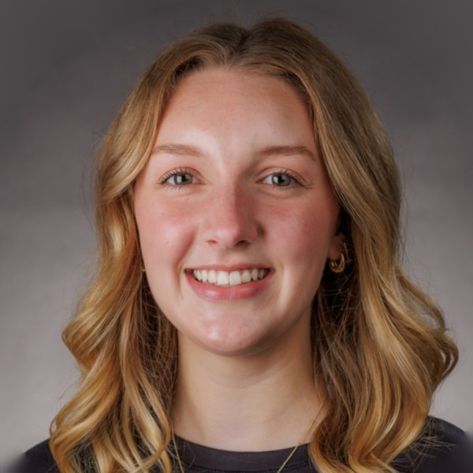

Emily Ward: What it’s like to be a UTA

Emily Ward liked ARE 304 enough to go back. The ABM sophomore from Stanly County is now an Undergraduate Teaching Assistant (UTA) for the course, helping other students succeed in it while she keeps building on what she learned. She also minors in economics and agricultural entrepreneurship.
In class every week, and review sessions before exams
In a typical week, Emily sits in on the class and answers students’ questions. Some weeks she hosts review sessions to help students prepare for exams and understand the course material.
She’s found that students will ask her things they might not ask the professor. “It’s been rewarding to be someone they feel comfortable coming to when they need extra help or clarification,” she said.
“Everything clicked”
One student was preparing for an exam, and the two of them were working through how to forecast data. When he tried the problem on his own, his answer wasn’t coming out right. Emily told him it was probably something small, and they spent a few minutes troubleshooting together.
“Once we found the issue, everything clicked, and he was able to get it on his own,” she said. “It was rewarding to see him gain that confidence and realize he was closer to understanding it than he thought.”
Teaching, Excel, and a professor who knows her
Emily has gained experience teaching and explaining concepts, more confidence in her Excel skills, and a strong working relationship with the professor she works with, Dr. Zach Raff.
The role is already on her resume. She hasn’t had an interview since becoming a UTA, but she’s looking forward to talking about it.
Go for it
Her summary of the job: “Being a UTA is a rewarding opportunity to strengthen your own knowledge while helping other students gain confidence and succeed in the classroom.”
And if you’re worried you won’t know every answer, Emily was too. “Once you’re back in the classroom and refreshing your knowledge of the material, you become much more comfortable,” she said.
‹ Back to Issue 3 All issues